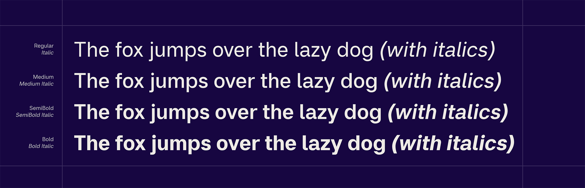
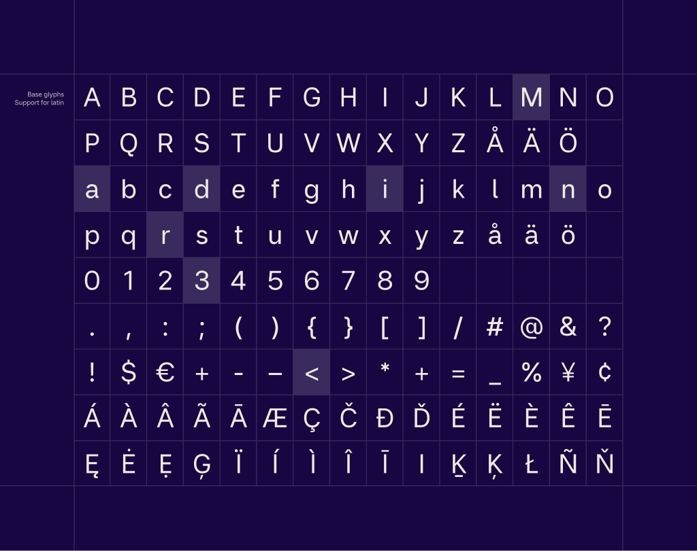
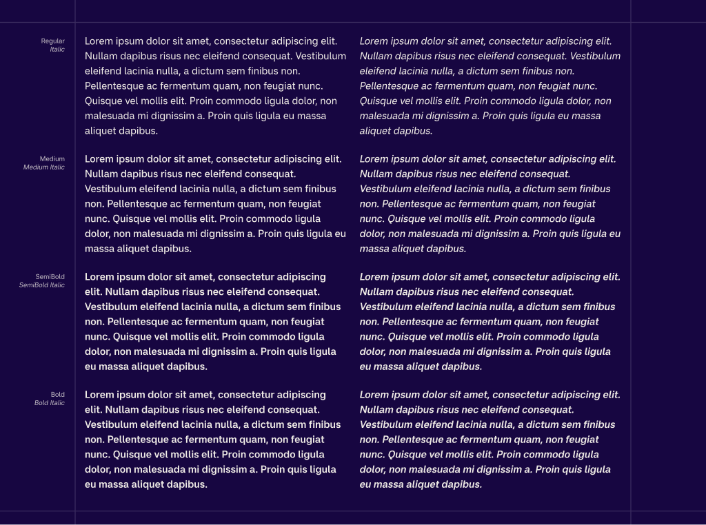
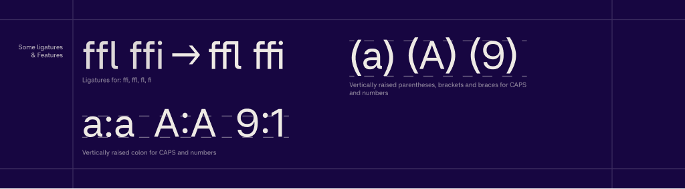

Miranda Sans is a contemporary sans serif typeface designed with a clear focus on readability on screens. It is built for text that needs to be read, not noticed, with calm proportions, open shapes, and carefully balanced spacing that holds up across sizes, weights, and long passages of content.
To contribute, see github.com/maxthunberg/miranda-sans.

The design avoids unnecessary stylistic gestures and instead concentrates on clarity, rhythm, and consistency. Each letter is shaped to work as part of a system, supporting words and sentences rather than drawing attention to itself. The result is a typeface that feels stable, neutral, and dependable, particularly in digital environments where legibility matters most.
   Miranda Sans was developed with variable font technology in mind, allowing it to adapt smoothly across weights while maintaining a consistent visual voice.
The typeface is named after the designer's favorite person in the world, his sister Miranda. What words sometimes fail to express, letters might.
The family currently includes multiple weights from Regular to Bold, with matching italics, and is designed to perform consistently across both screen and print environments.